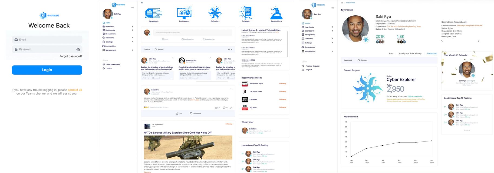
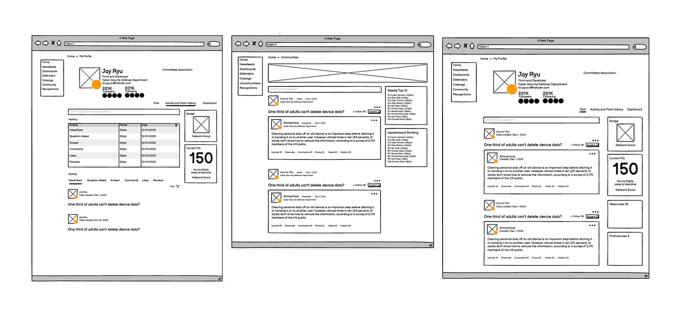
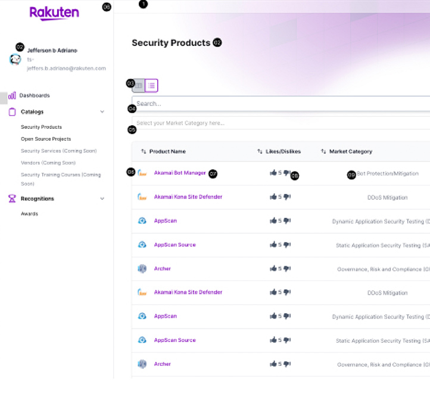
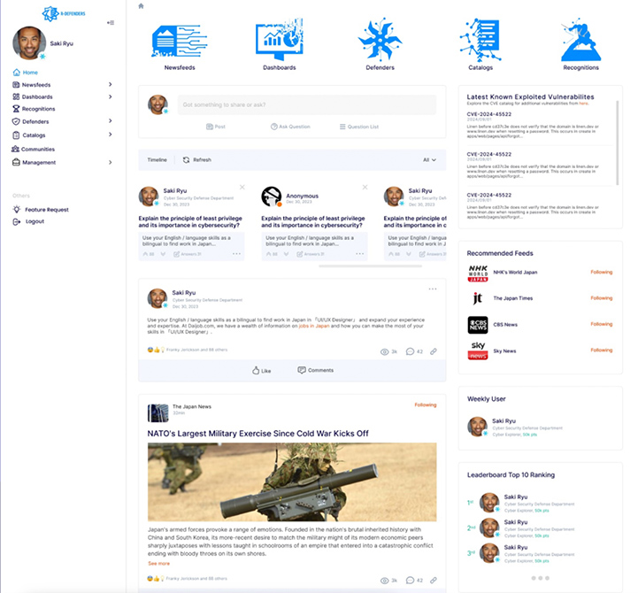
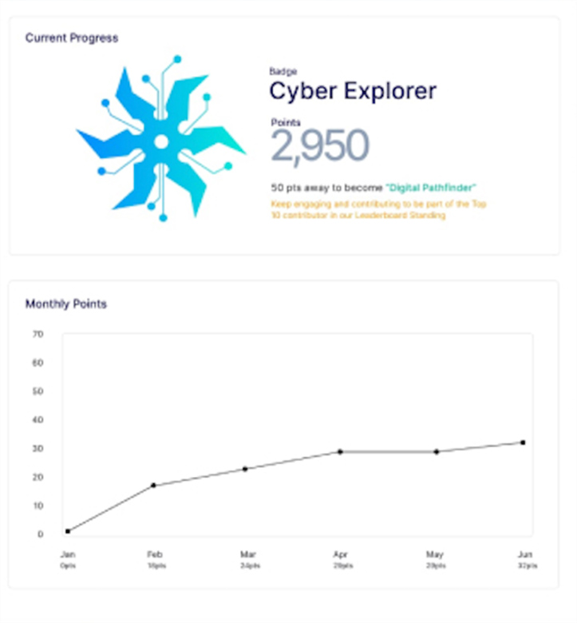
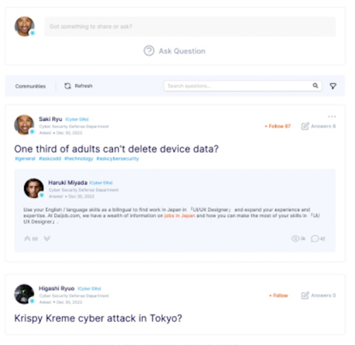
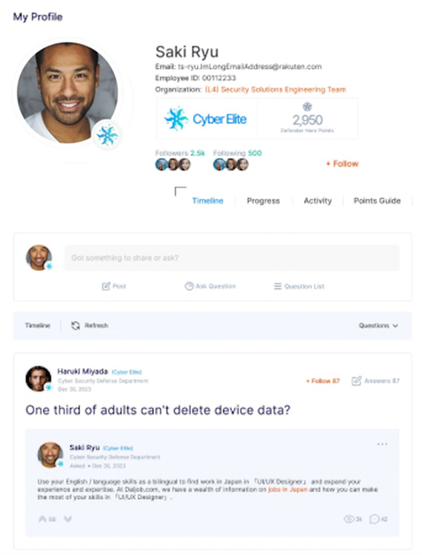
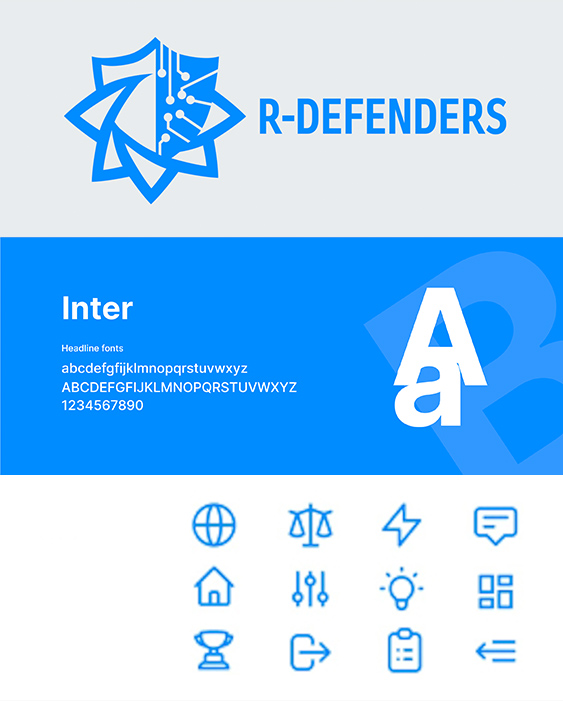

Redesigning an internal cybersecurity platform to consolidate security resources, improve discoverability, strengthen security awareness, and encourage collaboration across departments.

>My role. I was responsible for improving the overall user experience, information architecture, navigation, visual language, and interaction patterns while consolidating multiple cybersecurity resources into a more unified internal platform.
Rakuten employees had access to many cybersecurity resources: tools, vendors, products, services, news sources, and internal communities. But information and workflows were spread across different platforms, and departments rarely met in the same place.
Vendors, products, services, CVEs, open-source projects, and news lived in different sources.
Employees relied on familiar tools and didn't know other resources existed.
Unauthorized software and inappropriate storage of sensitive information created potential risk.
Employees and departments had few chances to share security knowledge.
I don't design from assumptions. Here is the evidence I actually had.
List only what you genuinely did. Delete the rest.
User research was limited during the initial project phase, so I supplemented available stakeholder requirements with UX auditing, platform analysis, and later validation opportunities.
Being open about this makes the rest of the case study more credible.
Each insight follows evidence, then insight, then design implication.
Users relied on familiar internal tools instead of exploring other cybersecurity resources.
The problem wasn't missing functionality. It was poor discoverability.
A central discovery experience with clear categories, search, recommendations, and context.
Products, vendors, CVEs, services, and source projects were hard to reach through one experience.
Users needed a single trusted entry point.
Consolidate the cybersecurity catalogs into one information architecture.
Employees and departments had limited ways to share security knowledge.
The platform had to support participation, not just reading.
Profiles, communities, comments, recognition, activity feeds, and notifications.
From business goals to user goals to the product loop.
The loop every feature serves:
Discover → Learn → Evaluate → Share → Collaborate
I structured the platform around what people do (discover, learn, collaborate, connect) rather than mirroring Rakuten's internal org structure.
R-Defender ├── My profile │ ├── Posts │ ├── Comments │ ├── Activities ├── Newsfeed │ ├── Security news │ └── Articles ├── Dashboard ├── Security Champions ├── Defenders │ ├── Employee search │ └── Organization hierarchy ├── Catalogs │ ├── Vendors │ ├── Products │ ├── Services │ ├── CVEs │ └── Source projects ├── Communities │ ├── Groups │ ├── Discussions │ └── Knowledge sharing └── Recognition



The redesigned flow reduces the need to leave the platform to research security products, and gives employees a way to validate and share information internally.
Security catalogs, vendors, products, services, CVEs, open-source projects.
Newsfeed, security articles, notifications.
Communities, comments, sharing, discussions.
Employee search, organization hierarchy, profiles.
Recognition, points, activities.
Problem. Many kinds of information competed for attention at the starting point.
Decision. Build around the most relevant actions: discover, monitor updates, open catalogs, engage with the community.
Result. The central discovery and engagement point.
Problem. Hard to find trusted cybersecurity resources.
Solution. One structure: vendor, product, service, CVE, source project. With search, filters, categories, reviews, tips, and related resources.
Principle. Make complex information discoverable without overwhelming people.
Profile. Posts, comments, activities, points, recognition.
Community. Discover, join, discuss, share, learn.
Decision. Social patterns turn a passive repository into an active cybersecurity community.



The platform covered several product areas and information types, so I set reusable components and visual rules to keep it consistent and scalable.
Typography, color system, grid, buttons, cards, forms, navigation, tables, notifications, tags.

Initially, red was proposed, but I explained t hat its strong associations wit h urgency and errors could create unintended signals in t he UI. I recommended royal blue instead, as it conveys trust, stability, and energy— making it more suitable for a user-friendly product.
The logo combines multiple shields, circuit elements, and t he R-Defenders wordmark; t he eight dots represent t he eight team members who built t he platform.
Brand attributes: secure, intelligent, modern, technical, trusted. Each one maps to a design choice:
The theme supports the product's purpose. It isn't decoration.
Use real tasks, and describe only the testing you actually ran.
| Task | Success criteria |
|---|---|
| Find a security product approved for your organization | Finds it, identifies relevant information, no assistance |
| Find the latest news about a specific vulnerability | Define |
| Find a colleague and share a security article | Define |
| Find information about a CVE | Define |
| Join a community and take part in a discussion | Define |
Only verified numbers go here. Never publish a metric you can't source.
Fill in only if you have data:
Stakeholders reported improved discoverability of security resources.
Formal post-launch analytics were not available during my involvement, so quantitative product impact could not be independently measured.
| Goal | Metric |
|---|---|
| Awareness | Catalog visits |
| Discoverability | Search success rate |
| Engagement | Posts and comments per active user |
| Collaboration | Cross-department interactions |
| Usability | Task completion, time on task |
| Adoption | Monthly active users |
| Security awareness | Approved-tool adoption |
| Content engagement | News and article interactions |
For each one: what evidence gave me confidence?
Problem. Users struggled to discover resources.
Evidence. Fragmented sources.
Decision. Consolidate catalogs.
Why. Reduce discovery friction.
Problem. Navigation reflected organizational structure.
Evidence. Users thought in tasks, not departments.
Decision. Organize around activities.
Why. Matches users' mental models.
Problem. Low cross-department collaboration.
Evidence. Limited knowledge sharing.
Decision. Communities, posts, comments, recognition.
Why. Encourage participation.
The platform held a large amount of cybersecurity information.
Showing everything on the dashboard would raise information density and cognitive load.
Prioritize the most relevant information. Use categories, search, filters, and progressive disclosure for depth.
This project reinforced the importance of validating information architecture before investing heavily in visual design. In complex enterprise products, the biggest UX challenge is often how information, workflows, and organizational structures connect, not the interface itself.
An internal platform also needs to create value beyond information access. To drive adoption, people need reasons to return, contribute, and collaborate.
SaaS product optimization: research, dashboards, onboarding, and workflow clarity.
Read the next case study → Back to portfolio Email me